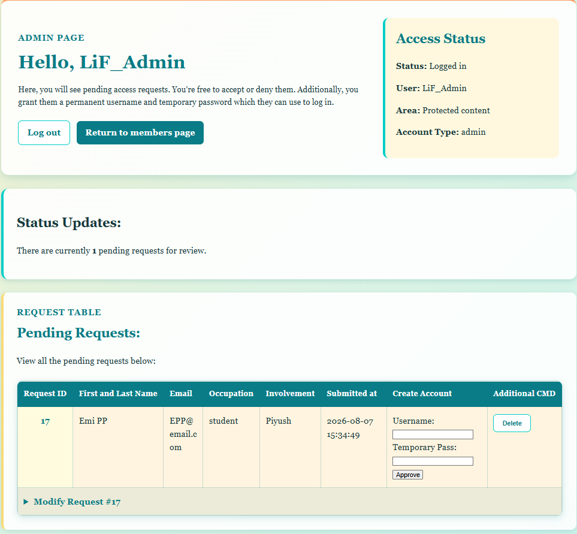
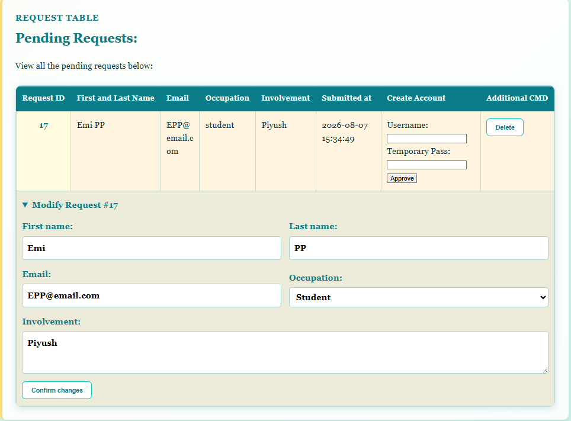
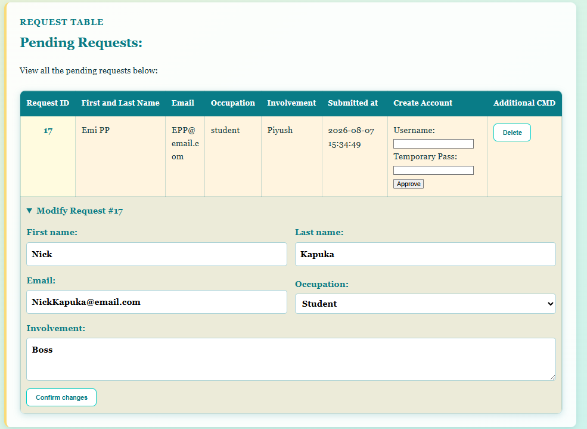
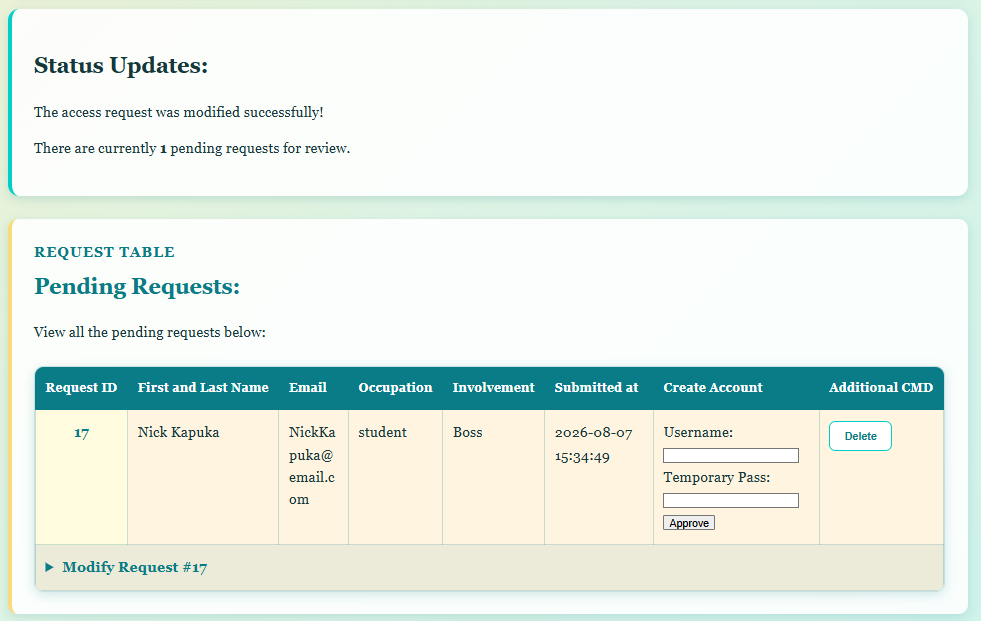

Manage Requests Updated
I continued the database portion of Assignment 2 by expanding
manage_requests.php. The page could already list pending
access requests and approve one by creating a user account. I added
the remaining CRUD operations needed by the assignment: updating
fields in an existing request and deleting a request.
The page remains restricted to a logged-in administrator:
if(($_SESSION['user_role'] ?? '') !== 'admin') {
http_response_code(403);
exit("Access denied; Admin perms required for entry to this page.");
}Reusable update function
I created updateAccessRequests() so one function can
update any permitted non-primary-key field in
access_requests:
function updateAccessRequests(
PDO $pdo,
int $requestID,
string $field,
$newValue
): bool {
// validation and UPDATE query
}
The function receives the PDO connection, row ID, field name, and
replacement value. The primary key is not included in the allowed
list, so the function cannot change request_id.
The allowed field list is important because PDO placeholders can safely bind values, but they cannot bind a column name. The field therefore has to be checked before it is placed into the SQL string:
$allowedFields = [
'first_name',
'last_name',
'email',
'birthday',
'person_type',
'involvement',
'drives_car',
'details',
'request_status',
'submitted_at',
'reviewed_at'
];
if(!in_array($field, $allowedFields, true)) {
throw new InvalidArgumentException(
"The field $field cannot be updated"
);
}After validation, the actual value and request ID are bound normally:
UPDATE access_requests
SET `$field` = :new_value
WHERE request_id = :request_id
The function throws an exception if execution fails or if
rowCount() does not report exactly one changed row. This
makes failures visible to the calling transaction.
Action routing
Each form sends a hidden action and
request_id. The PHP handler accepts only known actions:
if(!in_array($action, ['approve', 'delete', 'modify'], true)) {
$errors[] = "Invalid action request";
}
The request ID is also passed through
FILTER_VALIDATE_INT and must be positive. This prevents
the delete or modification branches from receiving an arbitrary row
identifier.
Delete handling
Each pending row now has a separate delete form. The browser asks for confirmation before sending it:
<form action="manage_requests.php" method="POST"
onsubmit="return confirm('Permanently delete this request?');">The PHP branch uses a prepared statement:
DELETE FROM access_requests
WHERE request_id = :request_id
request_id is bound as PDO::PARAM_INT, and
rowCount() must equal one. If the row does not exist or
was already handled, a RuntimeException is thrown instead
of displaying a false success message.
After a successful delete, the page redirects:
header("Location: manage_requests.php?deleted=1");
exit;This is the Post/Redirect/Get pattern. Refreshing the result page does not submit the delete request a second time.
Modify form
I added a second table row containing a
<details> element for each access request. Opening
it displays a form with the current values already loaded into the
inputs.
The editable fields are:
- First name
- Last name
- Person type/occupation
- Project involvement
Each value is escaped with htmlspecialchars() when
printed back into the HTML. This prevents a stored value from being
interpreted as HTML.
The server collects and validates the submitted values before starting
any database update. The modification branch then loads the existing
pending row, compares the old values with the submitted values, and
calls updateAccessRequests() only for fields that
changed.
The intended comparison is:
foreach($modifiedValues as $field => $newValue) {
if($newValue !== $currentRequest[$field]) {
updateAccessRequests($pdo, $requestID, $field, $newValue);
$changedFields++;
}
}Transactions
The modification and approval paths use a transaction because several related queries can be involved:
$pdo->beginTransaction();
// SELECT current row and perform required updates
$pdo->commit();If any validation, query, or row-count check throws an exception, the catch block reverses the incomplete operation:
if($pdo->inTransaction()) {
$pdo->rollBack();
}This prevents a request from being only partly updated.
Testing notes
The most important checks for this feature are:
- A normal user receives HTTP 403 and cannot load the page.
- An invalid action or request ID is rejected.
- Delete removes exactly the selected pending request.
- Refreshing after deletion does not repeat the POST.
- Modify displays the current values and updates only changed fields.
- A failed modification rolls back all changes.
-
Field names use the exact SQL names, especially
person_type. - The changed-field counter increases only inside the branch that performs an update.
The last two checks are especially important because dynamic update forms are sensitive to spelling and comparison mistakes.

Internally, values can be edited:

Changing these values:

Clicking submit:

Entry changed!